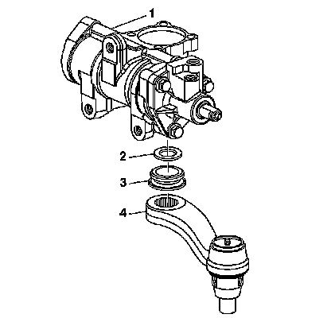
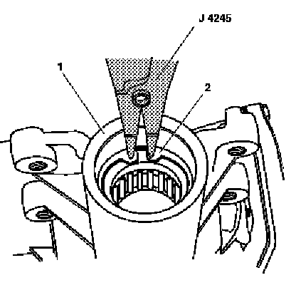
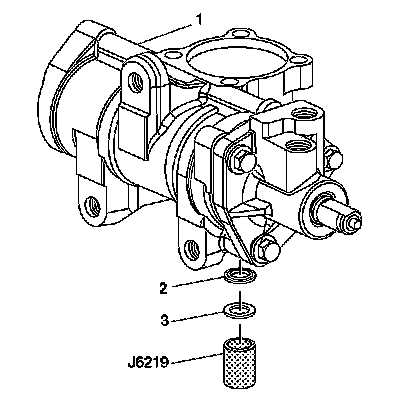
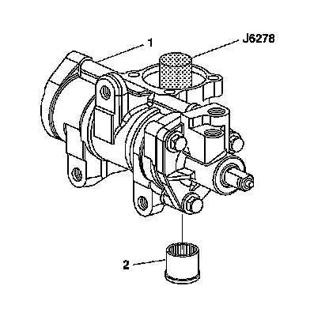
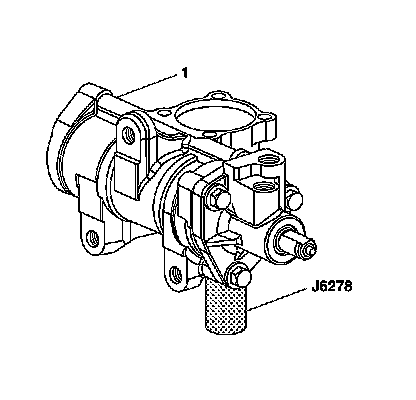
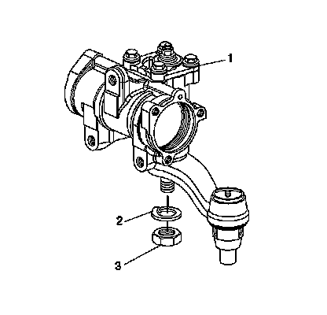

Steering Gear Pitman Shaft Seal and Bearing Replacement - Off Vehicle
Steering Gear Pitman Shaft Seal and Bearing Replacement - Off Vehicle
Tools Required
^ J 6278 Pitman Shaft Bearing Remover and Installer
^ J 6219 Pitman Shaft Oil Seal Installer
^ J 4245 Internal Snap Ring Pliers
Disassembly Procedure

1. Remove the steering gear pitman shaft and housing cover. Refer to Steering Gear Pitman Shaft and Housing Cover Replacement - Off Vehicle.
2. Remove the pitman arm (4) from the steering gear.
3. Remove the pitman shaft boot (3) from the steering gear housing (1).
Important: Do not score the housing bore when prying out seals and washers.
4. Remove the pitman shaft dust seal (2) from the steering gear housing (1).

5. Remove the pitman shaft retaining ring (2) from the steering gear housing (1) using J 4245.

6. Remove the backup washer (3) from the steering gear housing (1).
7. Pry the pitman shaft seal (2) from the steering gear housing (1) using a screwdriver.
8. Inspect the housing for burrs and replace if necessary.

9. Insert J 6278 through the hole in the top of the steering gear housing (1).
10. Drive out the needle bearing (2) from the steering gear housing (1).
Assembly Procedure

1. Install the needle bearing into the steering gear housing (1) using J 6278.
2. Drive the bearing into the housing until the needle bearing shoulder seats against the housing.
3. Coat the pitman shaft seal (2) and backup washer (3) with grease.
4. Install the pitman shaft seal (2) onto the steering gear housing (1) using J 6219.
5. Install the backup washer (3) onto the steering gear housing (1).
Important: The pitman shaft seal must not contact the bearing.
6. Install the pitman shaft retainer ring (2) onto the steering gearing housing (1) using J 4245.
7. Coat the dust seal (2) with grease.
8. Install the dust seal (2) onto the steering gear housing (1).
9. Install the pitman shaft boot (3) onto the steering gear housing (1).
Important: Do not install the lock washer and nut until all components have been installed onto the steering gear housing.
10. Install the pitman shaft and the side cover. Refer to Steering Gear Pitman Shaft and Housing Cover Replacement - Off Vehicle.
11. Install the pitman arm (4) to the steering gear.

12. Install the lock washer (2).
13. Install the nut (3).
14. To adjust the pitman shaft, refer to Steering Gear Pitman Shaft Over-Center Preload Adjustment - Off Vehicle.